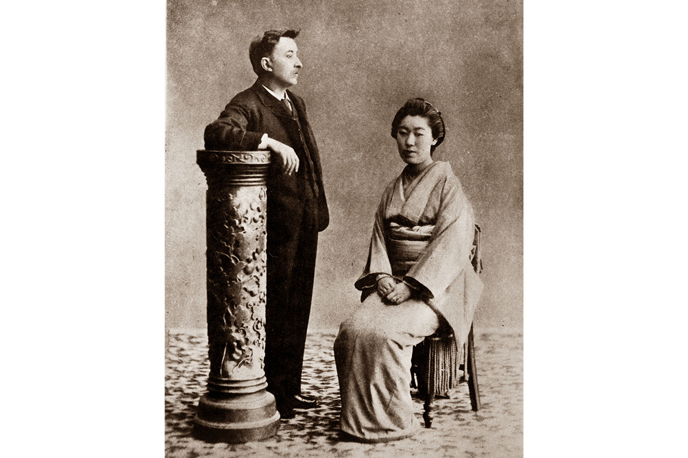
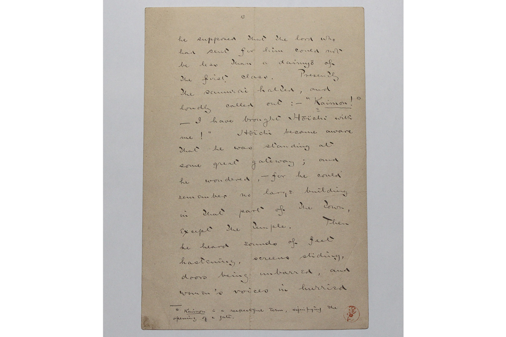
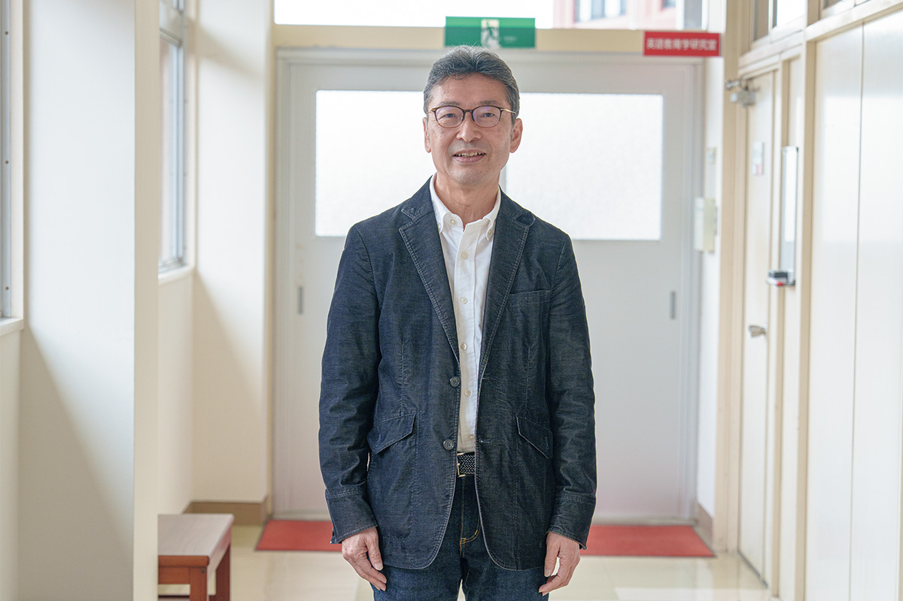
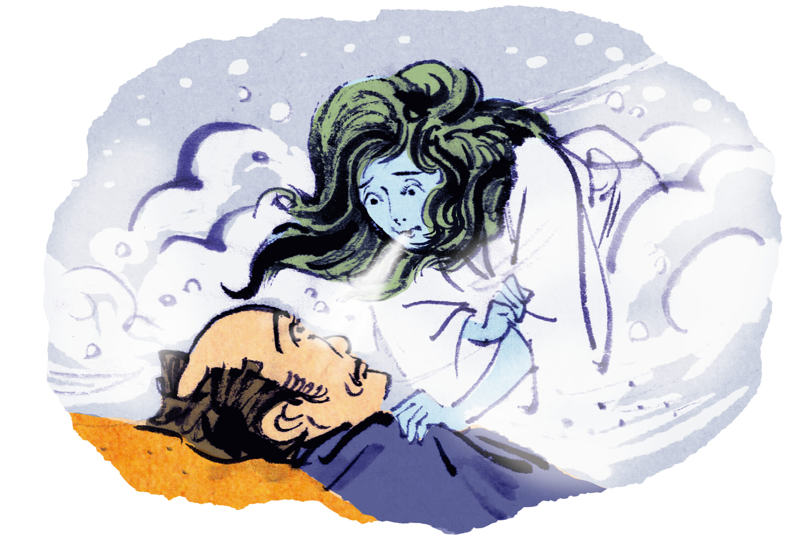
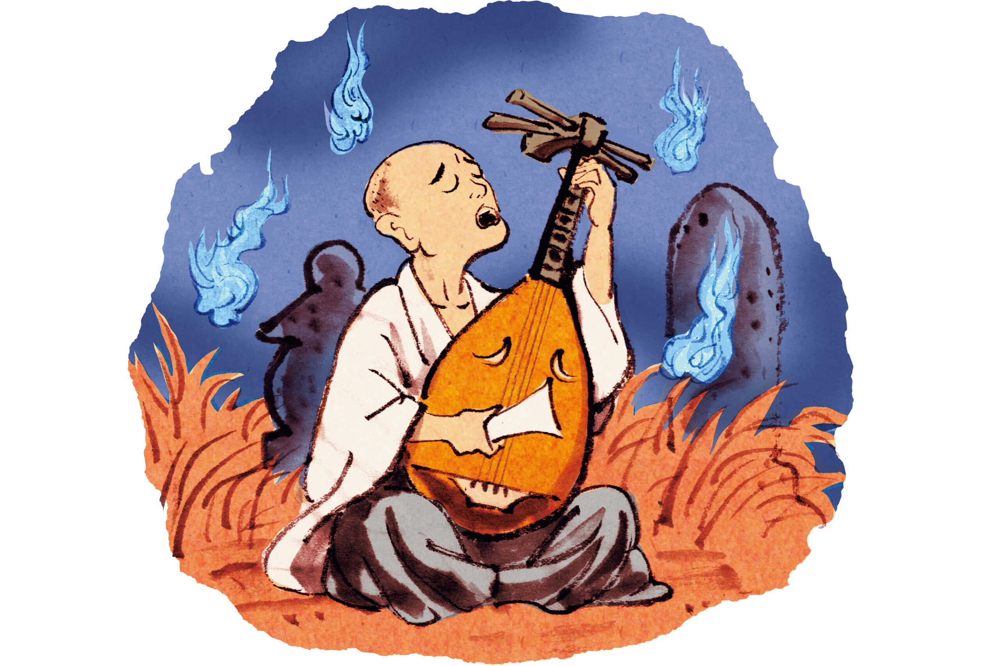

Префектура Симанэ · Мацуэ · литература
Лафкадио Херн и его «Кайдан»: японские истории о призраках, рождённые в Мацуэ

Японцы знают его как Коидзуми Якумо, остальной мир как Лафкадио Херна. Он записал истории о снежной женщине и безухом музыканте, услышанные от жены, и превратил народные страшилки в литературу.
Писатель
Человек, который слушал призраков
Херн не придумывал свои страшные истории с нуля. Сюжеты ему пересказывала жена Сэцу, а он заново записывал предания, веками жившие в разных уголках Японии. Что он в них нашёл, объясняет его правнук Бон Коидзуми, фольклорист и директор Мемориального музея Коидзуми Якумо в Мацуэ.
«Один из ключей к Якумо это „периферийность“. Хороший пример „Безухий Хоити“. Всю свою кочевую жизнь он чувствовал себя меньшинством и поэтому глубоко сочувствовал тем, кто стоит не в центре»
Бон Коидзуми, директор музея

Устные истории нередко пересекают границы. На Гавайях, например, рассказывали городскую легенду о женщине без лица, похожую на японскую «ноппэрабо». Скорее всего, её увезли за океан японские переселенцы, выросшие на книгах Якумо. У Херна был и взгляд фольклориста на народные верования: директор музея вспоминает рассказ «Расписка каппы», где водяной дух даёт людям письменное обещание.

Много историй Херн посвятил перерождению. В «Мотида-но ура» человек возвращается в мир снова человеком, а в «Сакуре шестнадцатого дня» душа самурая, совершившего сэппуку, переселяется в вишнёвое дерево. Это не просто ужасы: грустные, но тёплые истории и есть главный дар Якумо.
«Якумо создавал „литературу связей“. Он соединял Запад и Восток, мёртвых и живых. Сейчас время разобщённости, и поэтому его снова читают»
Бон Коидзуми, директор музея
Кайдан
Две истории из книги
Юки-онна, снежная женщина
Дровосек попадает в метель и пережидает ночь в хижине. Проснувшись среди ночи, он видит женщину в белом кимоно. «Ты ещё молод, и я тебя пощажу. Но если расскажешь кому-нибудь о том, что видел этой ночью, умрёшь». Потом он встречает девушку, женится, у них рождаются дети, и однажды он рассказывает жене о той ночи. «Это была я, отвечает она. Но детей жалко, поэтому я тебя не убью». И исчезает белым туманом.

Приёмный дед Сэцу рассказывал, что в детстве в большой снегопад встретил на улице снежную женщину и с криком убежал домой, и эта история запомнилась Херну. Исходным сюжетом считают рассказ садовника из-под Токио о духе дерева, а героиню, по-видимому, писатель заменил на снежную женщину.
Безухий Хоити
Жил когда-то слепой музыкант Хоити, игравший на лютне бива. Однажды летней ночью кто-то уводит его из храма и велит исполнить сказание о битве при Даноуре, последнем сражении войны Тайра и Минамото в 1185 году. Хоити уходит ночь за ночью. Настоятель, заподозрив неладное, идёт следом и видит, как музыкант играет у могилы малолетнего императора Антоку, погибшего в той битве, а вокруг пляшут блуждающие огни.

Чтобы защитить Хоити от духов, настоятель покрывает всё его тело текстом «Сутры сердца». Только уши он забывает исписать, и призрак, увидев их в темноте, отрывает их.
Где увидеть
Музей и дом Якумо в Мацуэ
В Мацуэ, у северного рва замка, рядом стоят Мемориальный музей Коидзуми Якумо и дом, где Херн с Сэцу прожили около пяти месяцев с июня 1891 года, пока он не уехал преподавать в Кумамото на острове Кюсю. Для обоих есть общий билет.
Мемориальный музей Коидзуми Якумо
- Адрес
- префектура Симанэ, Мацуэ, Окуя-тё, 322
- Телефон
- +81 852-21-2147
- Часы работы
- апрель–сентябрь 9:00–18:00, октябрь–март 9:00–17:00 (вход до 17:30 и 16:30)
- Выходные
- без выходных, несколько дней в году на обслуживание
- Цены / Вход
- 600 иен, общий билет в музей и дом 800 иен
Дом Коидзуми Якумо
- Адрес
- префектура Симанэ, Мацуэ, Китахори-тё, 315
- Часы работы
- апрель–сентябрь 9:00–18:00, октябрь–март 9:00–17:00 (вход до 17:30 и 16:30)
- Выходные
- без выходных, несколько дней в году на обслуживание
- Цены / Вход
- 400 иен, общий билет в музей и дом 800 иен
Фото: Ацуси Ямахира.